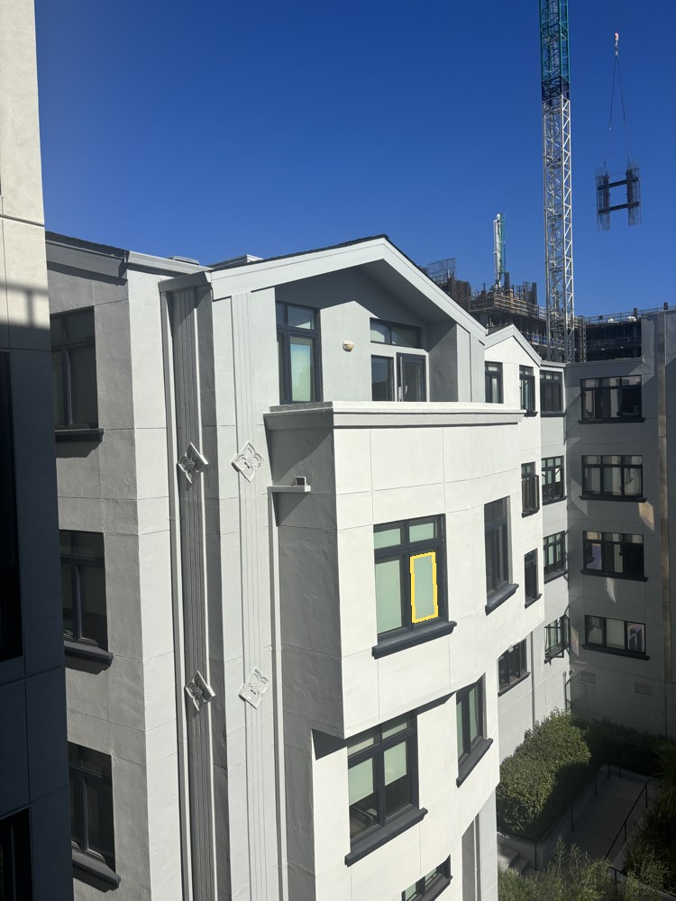
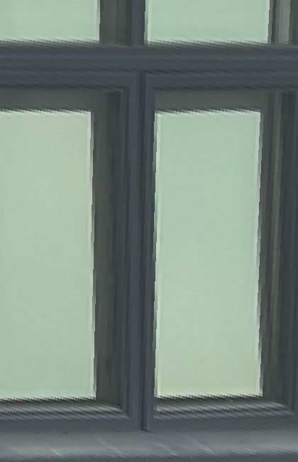
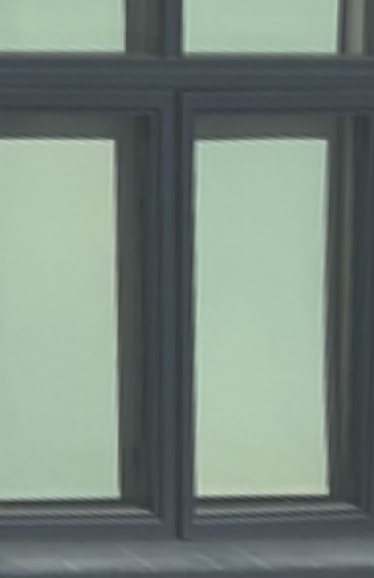
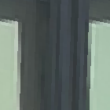
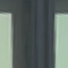
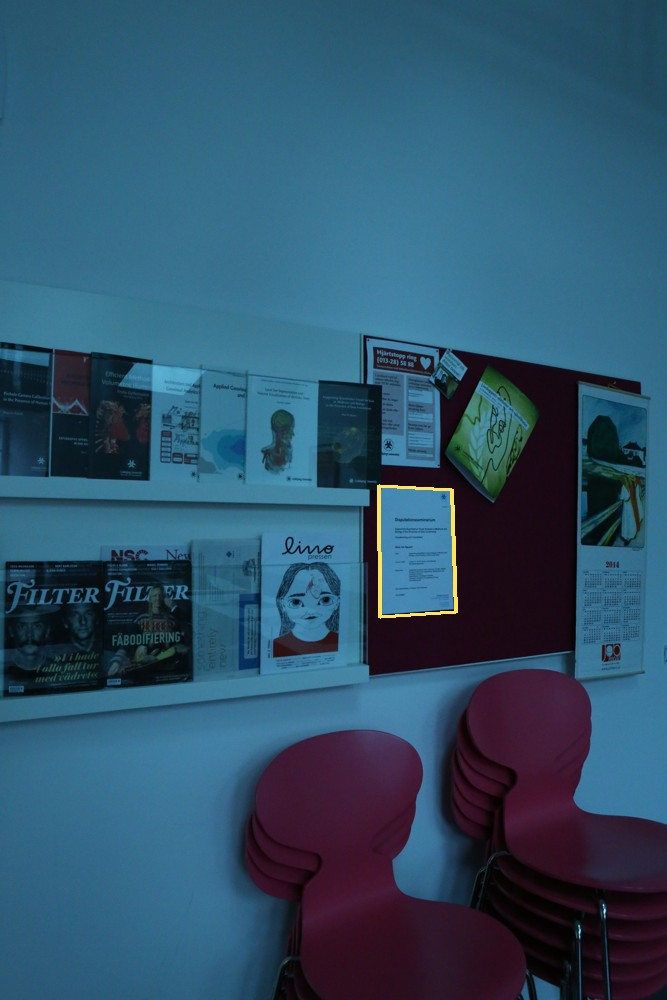
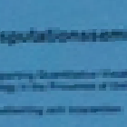

Starting with overlapping photographs, I estimate how points move between images, warp the images into the same coordinate system, and blend their overlaps into a panorama.
A.1 · Shoot the pictures
The first set is six of my courtyard photographs, ordered from left to right. The overlap gives me recognizable corners to match: window frames, facade edges, and balcony details. I use two pairs from this set for the outdoor mosaics.
A homography works best when the camera rotates around a fixed center of projection, or when the matched scene lies on one plane. The courtyard set has nearby railings and a more distant facade. Its capture geometry was not measured, and the remaining double edges are consistent with camera translation and parallax.
For a second scene, I use three photographs from the PASSTA Lunch Room Blue dataset. These were captured with a panorama head. The selected frames are 20° apart, making them a useful comparison with the outdoor set.
Lunch-room images: Giulia Meneghetti, Martin Danelljan, Michael Felsberg, and Klas Nordberg, PASSTA, SCIA 2015. Dataset archive, CC BY 4.0. Selected BMP frames were converted to JPEG and resized for this page; crops, rectifications, and mosaics below are derived from them. The original blue cast is retained.
A.2 · Recover homographies
A homography tells me where a point in one photograph lands in another. Each match is (x, y) in the source and (u, v) in the reference. The matrix has eight unknowns after fixing its bottom-right entry to 1.
[ a b c ]
H = [ d e f ] u = (ax + by + c) / (gx + hy + 1)
[ g h 1 ] v = (dx + ey + f) / (gx + hy + 1)
Multiplying away the denominator gives two linear equations for each match. Stacking them produces Ah = b:
[ x y 1 0 0 0 -ux -uy ] h = u
[ 0 0 0 x y 1 -vx -vy ] h = v
h = [a b c d e f g h]ᵀ
Four nondegenerate pairs provide eight equations. More pairs make the system overdetermined, which helps average out small annotation errors. My computeH builds these rows, solves them with np.linalg.lstsq, appends 1, and reshapes the result into a 3 × 3 matrix. Least squares minimizes equation residuals; I separately measure the distance between projected points and their matches.
Matching numbers identify the same feature. Yellow circles are approximate annotations; pink crosses are H's predictions. Cropped here to make the points easier to see.
For the left-to-center lunch-room pair, 12 correspondences produce a 24 × 8 system. At the original 1280 × 1920 resolution, the recovered matrix is:
The RMS reprojection error is 3.51 pixels, with a maximum of 6.71 pixels. These errors use the fitting points themselves, so they check the fit rather than independently proving alignment across the scene. The approximate point coordinates are stored directly in the main script.
A.3 · Warp and rectify images
Once H is known, I still need to fill the output pixels. Forward-mapping source pixels can leave holes after rounding. Instead, I visit each output pixel, apply H⁻¹ to find its source location, divide by the homogeneous coordinate, and sample there.
For an unrestricted warp, I transform the four source corners to find the output bounds. I retain negative coordinates through a canvas origin. A separate validity mask distinguishes empty space from real black pixels.
Nearest neighbor rounds the source coordinates and copies one pixel. Bilinear interpolation combines the four surrounding pixels. With fractional offsets dx and dy, their weights are:
top left: (1 − dx)(1 − dy) top right: dx(1 − dy)
bottom left: (1 − dx)dy bottom right: dx·dy
Both sampling methods are implemented directly with NumPy. Pillow only handles loading, saving, and resizing before the projective warp.
Rectification 1 · Courtyard window
Four corners of the right glass pane map to a rectangle, with some margin to show the surrounding frame. The output is 420 × 650 pixels.

Source · Selected plane

Nearest neighbor

Bilinear

Nearest · 140 × 140 crop

Bilinear · Same crop
The selected pane becomes rectangular. The recessed frame and shadows do not all share that plane. Corner estimates and the chosen target aspect ratio also limit the result.
Rectification 2 · Lunch-room notice
The four corners of a paper notice map to a 420 × 594 rectangle. This isolates a smaller planar object in the center lunch-room photograph.

Source · Selected noticeNearest neighborBilinear

Nearest · 140 × 140 cropBilinear · Same crop
The paper becomes front-facing, but enlargement cannot recover text absent from the original. Both examples use chosen display aspect ratios, not measured physical dimensions.
Rectification
Nearest
Bilinear
Courtyard window
10.87 ms
35.36 ms
Lunch-room notice
10.62 ms
31.36 ms
Median of five warmed-up calls, excluding file loading and plotting. Each method uses the same output size. Timings vary by machine and run.
Nearest neighbor is about three times faster here, but enlarged edges look blocky. Bilinear produces smoother transitions at the cost of extra sampling and some softness. It does not add detail or fully solve aliasing when shrinking an image.
A.4 · Blend images into a mosaic
I choose a reference photograph, give it the identity transform, and estimate every other image's homography into its coordinates. Transforming all corners gives a shared canvas large enough for every warped image.
Simply overwriting pixels makes source boundaries visible. For feathering, each image gets weights based on distance to its nearest edge, normalized to a maximum of 1. A one-pixel floor preserves valid boundary pixels. I warp the colors and weights with bilinear interpolation, then normalize their weighted sum:
Only valid source pixels contribute. Pixels with no coverage remain transparent. Each comparison uses the same transforms and canvas; only the blending changes.
This pair aligns the building reasonably well, but the nearby railing does not line up perfectly. I raise the feather weights to the fourth power to favor image interiors and narrow the transition. It reduces some double edges but cannot remove the underlying parallax.
Linear feathering softens the exposure transition across the facade. The left side stretches because both photographs are projected onto the reference image's plane. The moving crane load and some building edges still show mismatch. Blending hides a boundary more effectively than it fixes alignment.
The center photograph stays fixed while the left and right images warp toward it. Linear feathering makes overlapping wall regions more continuous. Approximate correspondences and uncorrected lens distortion can still leave small errors. I keep the dataset's original blue cast rather than applying color correction.
Sources and derived panorama: PASSTA Lunch Room Blue, Meneghetti et al., CC BY 4.0; dataset credit and archive linked in A.1.
What I learned
The balcony result helped me understand why a low reprojection error is not enough. The building lines up, but parts of the railing still appear twice. They are at different depths, so camera translation affects them differently. Feathering makes the transition less obvious, but the mismatch is still there. Taking the photos without shifting the camera's position would help more than adjusting the blend.